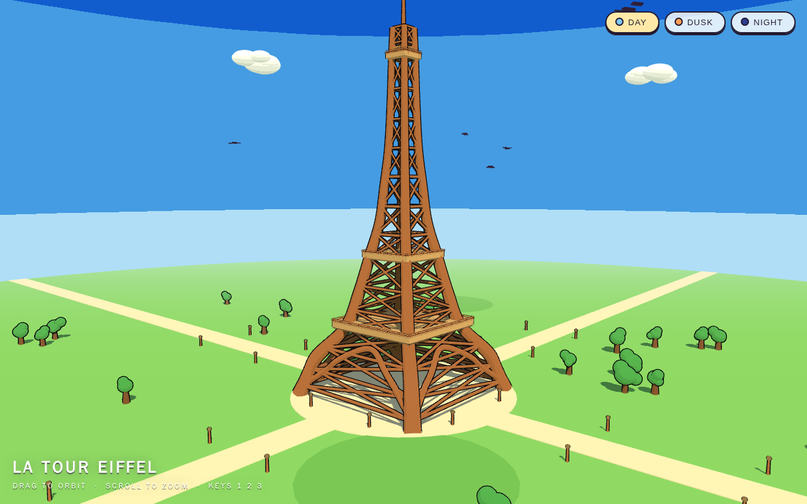
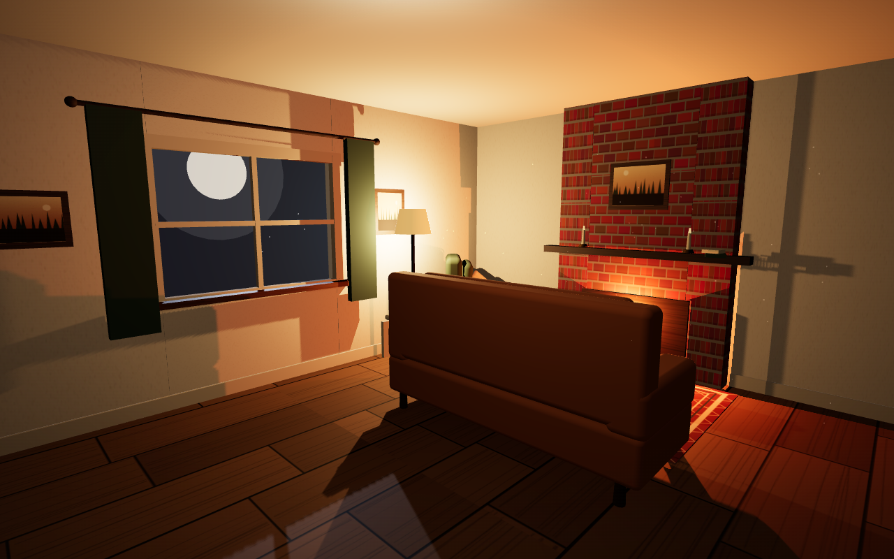
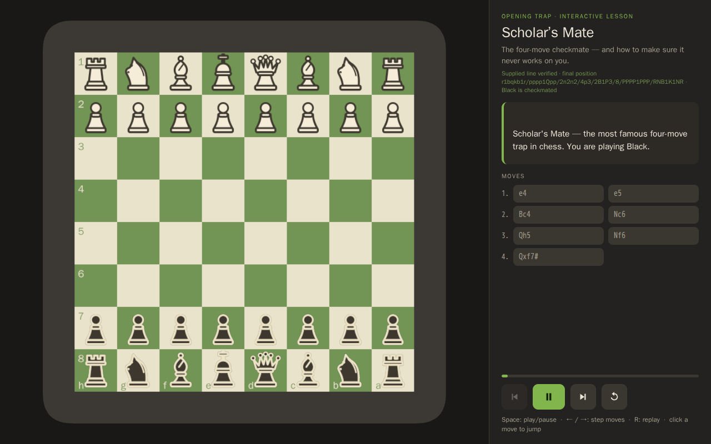

GLM-5.3-Flash
MLX oQ4 (mixed precision)TensorFold MLX oQ4 + MTPtensorfold 1.3.3 · M3 Ultra
Tasks run3
Working results3 of 3
Attempts3
Generated tokens186.0K
Energy218 Wh
Results
Every attempt, newest first per task. Faded rows are earlier attempts that were retried.
| Task | Run ended · judged page | Generated | Reasoning | Model calls | Tool errors | Energy | Wall | |
|---|---|---|---|---|---|---|---|---|
 |
Eiffel Tower 1 of 1 |
agent finished 1 canvas · 0 missing files · 0 page errors |
61.1K | 42.5K | 78 | 0 | 81.39 Wh | 1 h 2 min |
 |
Reading room 1 of 1 |
agent finished 1 canvas · 0 missing files · 0 page errors |
66.0K | 44.0K | 48 | 5 | 75.34 Wh | 54 min |
 |
Scholar's Mate 1 of 1 |
agent finished 1 canvas · 0 missing files · 0 page errors |
58.9K | 38.4K | 54 | 1 | 61.69 Wh | 47 min |
* Reasoning estimated from the raw stream where the engine reports one combined count. Wall time depends on hardware and is not ranked.
Pack and engine
- Model
- GLM-5.3-Flash
- Quant
- MLX oQ4 (mixed precision)
- Pack
- TensorFold/GLM-5.3-Flash-MLX-oQ4-MTP · TensorFold MLX oQ4 + MTP
- Revision
- 98725463185746ffaacb19f1327d1d6814a219f0
- Size on disk
- 185.8 GB
- Engine
- tensorfold 1.3.3
- Engine settings
- context=262144, slots=4, load_limit_gb=233.646221, prefill=prompt time share 0.5 (TENSORFOLD_PREFILL_SHARE), other prefill settings at engine defaults, speculative=MTP (the pack's native head; the default), flags=--vision --vision-max-images 64, vision=enabled (--vision, up to 64 images per request; PNG built in, JPEG via libjpeg-turbo 3.1.4.1), trial_isolation=exclusive GPU; verified CPA DigitalOcean fallback, max_concurrent_requests=4
- Hardware
- M3 Ultra 60c / 256 GB
- Request
- {"reasoning_effort": "high"}
- Reasoning effort
- high
- Thinking budget
- Not explicitly recorded; engine/provider default unknown
- Output limit
- 65.5K tokens per response, including reasoning